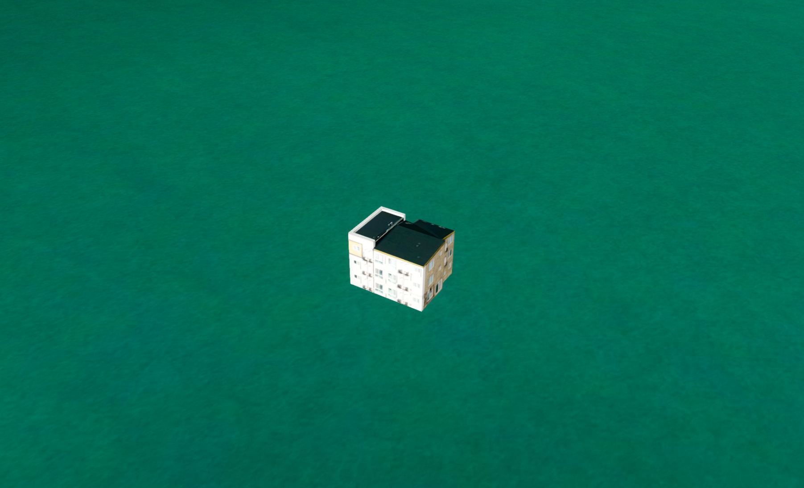
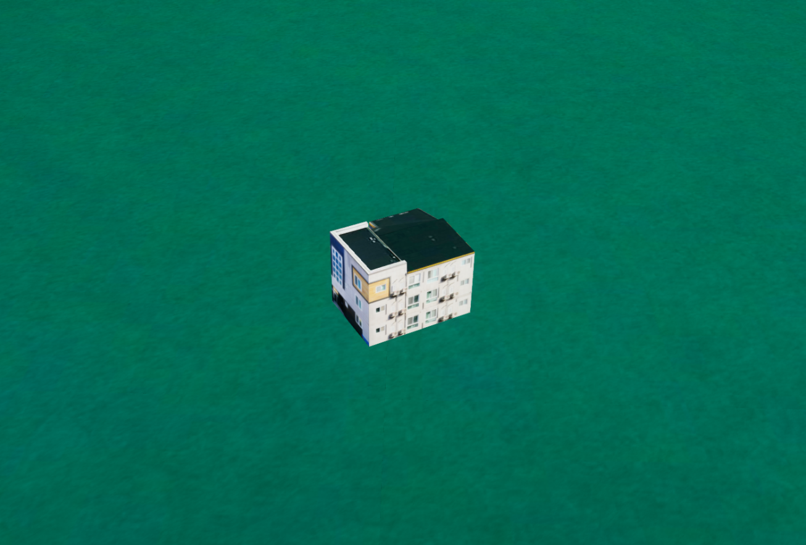
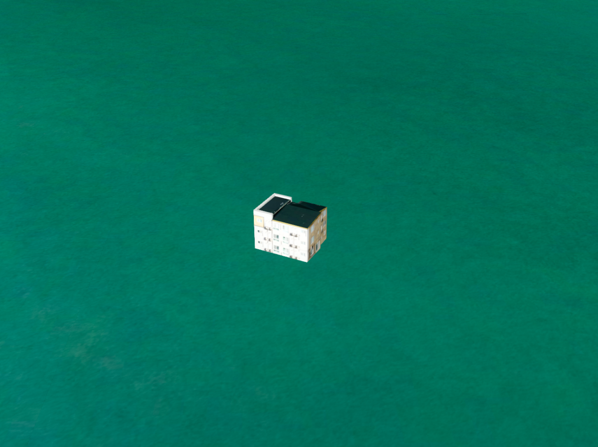
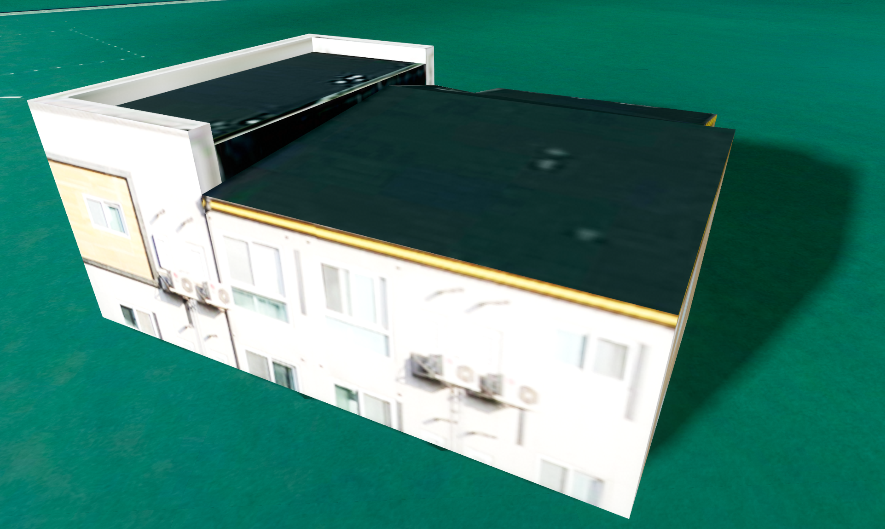
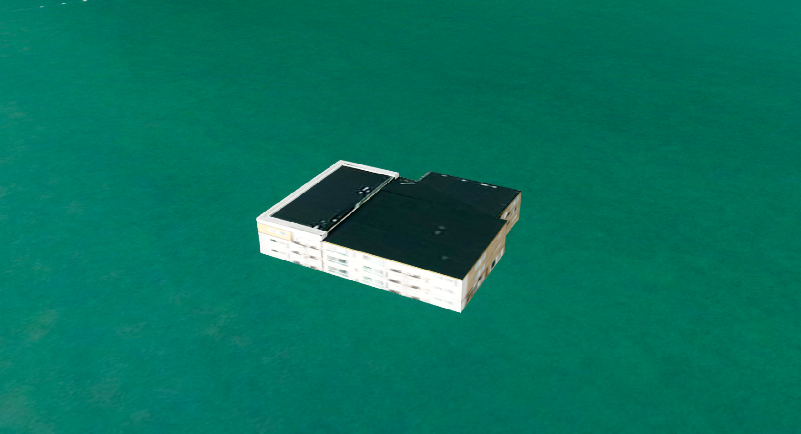

컴포넌트 이동·회전·크기 제어
목차
컴포넌트의 개념은 용어 설명 - 컴포넌트를, 일반 컴포넌트와 인스턴스 컴포넌트의 차이는 용어 설명 - 인스턴스 컴포넌트를 참고하세요.
이 장에서는 컴포넌트의 위치를 이동시키고, 회전시키고, 크기를 변경하는 방법에 대해 다룹니다.
컴포넌트를 정의하는 U3dComponentPosition과 U3dComponentInstancedPosition 모두 동일한 함수를 사용합니다.
가독성을 위해 이 장의 API 설명과 코드 예시는 U3dComponentPosition 기준으로 서술합니다.
1. 위치 제어하기
컴포넌트는 setPosition() 함수로 월드 좌표(EPSG:3857)를 설정해 위치를 변경할 수 있습니다.
또한 getPosition()또는 getWorldPosition() 함수를 통해 컴포넌트의 현재 위치를 조회할 수 있습니다.
API
U3dComponentPosition.setPosition(position) : 컴포넌트의 위치를 설정하는 함수
매개변수
position(WorldPositionVector3) : 이동할 월드 좌표(EPSG:3857). 필수
1. 컴포넌트 위치 설정
component.setPosition({
x: 14129044,
y: 4511042,
z: 30
});
2. 컴포넌트 위치 조회
getPosition() 함수와 getWorldPosition() 함수 모두 컴포넌트의 위치를 조회하는 역할을 합니다.
다른점은 getPosition()은 위경도 좌표(EPSG:4326)를 조회, getWorldPosition()은 GeOnDT 월드 좌표(EPSG:3857)를 조회합니다.setPosition() 함수의 매개변수가 월드 좌표(EPSG:3857)이다 보니 getPosition()도 월드 좌표를 반환한다고 혼동하기 쉽지만, getPosition()은 위경도 좌표를 반환한다는 점에 유의합니다.
API
U3dComponentPosition.getPosition() : 컴포넌트의 현재 위경도 좌표(EPSG:4326)를 조회 함수
반환값
return(GeoPositionVector3) : 컴포넌트의 현재 위경도 좌표(EPSG:4326)
API
U3dComponentPosition.getWorldPosition() : 컴포넌트의 현재 월드 좌표(EPSG:3857)를 조회 함수
반환값
return(WorldPositionVector3) : 컴포넌트의 현재 월드 좌표(EPSG:3857)
const geographicPosition = component.getPosition(); // 위경도 좌표(EPSG:4326)
console.log(geographicPosition);
const worldPosition = component.getWorldPosition(); // 월드 좌표(EPSG:3857)
console.log(worldPosition);
2. 회전 제어하기
컴포넌트는 전체 회전 값을 한 번에 설정하거나, 한 축의 각도만 변경하거나, 현재 방향을 기준으로 상대 회전할 수 있습니다.setRotation()은 **라디안(Radian)**을 사용하고, setRotationX()·setRotationY()·setRotationZ()와 setRotationRelative()는 **도(Degree)**를 사용합니다.
1. 전체 회전값 설정
API
U3dComponentPosition.setRotation(rotation) : 컴포넌트의 각 축 회전값을 라디안 단위로 설정하는 함수
매개변수
rotation(RadianEulerLike) : X·Y·Z축의 라디안 회전값. 필수
const rotation = {
x: Math.PI / 2,
y: 0,
z: 0
};
component.setRotation(rotation);
위 예제는 X축 회전값을 π / 2 라디안, 즉 90도로 설정합니다.
2. 축별 회전값 설정
축별 설정 함수는 선택한 축의 회전 값만 변경하고 나머지 축의 현재 값은 유지합니다.
API
U3dComponentPosition.setRotationX(degree) : 컴포넌트의 X축 회전 값을 도 단위로 설정하는 함수
매개변수
degree(number) : X축 회전값(Degree). 필수
API
U3dComponentPosition.setRotationY(degree) : 컴포넌트의 Y축 회전값을 도 단위로 설정하는 함수
매개변수
degree(number) : Y축 회전값(Degree). 필수
API
U3dComponentPosition.setRotationZ(degree) : 컴포넌트의 Z축 회전값을 도 단위로 설정하는 함수
매개변수
degree(number) : Z축 회전값(Degree). 필수
component.setRotationX(90);
component.setRotationY(45);
component.setRotationZ(30);
3. 현재 방향을 기준으로 회전
setRotationRelative()는 월드 축의 절대 회전 값을 새로 지정하지 않고, 컴포넌트의 현재 방향을 기준으로 입력한 각도만큼 회전합니다.
API
U3dComponentPosition.setRotationRelative(rotation) : 현재 방향을 기준으로 각 축을 입력한 각도만큼 회전하는 함수
매개변수
rotation(DegreeEulerLike) : X·Y·Z축에 적용할 도 단위 상대 회전값. 필수
const relativeRotation = {x: 0, y: 0, z: 30};
component.setRotationRelative(relativeRotation);
component.setRotationRelative(relativeRotation);
위 예제는 현재 방향을 기준으로 Z축 30도 회전을 두 번 적용합니다.
4. 현재 회전값 조회
API
U3dComponentPosition.getRotation() : 컴포넌트의 현재 축별 회전 값을 반환하는 함수
반환값
return(Euler) : 라디안 단위의 현재 회전 값
const rotation = component.getRotation();
console.log(rotation.x, rotation.y, rotation.z);
5. 회전 결과


3. 크기 제어하기
컴포넌트의 크기는 하나의 숫자로 모든 축을 같은 비율로 변경하거나, {x, y, z} 값을 입력해 축마다 다르게 설정할 수 있습니다.
인스턴스 방식에서는 각 축의 크기값을 0.0001 이상 10000 이하로 설정해야 합니다. 범위를 벗어난 값은 적용되지 않습니다.
API
U3dComponentPosition.setScale(scale) : 컴포넌트의 전체 크기 또는 축별 크기를 설정하는 함수
매개변수
scale(number | string | Vector3Like) : 모든 축에 적용할 값 또는{x, y, z}형태의 축별 크기값. 필수
1. 모든 축을 같은 비율로 변경
숫자 하나를 입력하면 X·Y·Z축에 같은 값이 적용됩니다.
component.setScale(3); // {x: 3, y: 3, z: 3} 과 동일함
2. 축별 크기 설정
{x, y, z} 값을 입력하면 각 축의 크기를 개별적으로 설정할 수 있습니다.
component.setScale({x: 2, y: 2, z: 1});
위 예제는 X축과 Y축의 크기를 2, Z축의 크기를 1로 설정합니다.
3. 현재 크기 조회
API
U3dComponentPosition.getScale() : 컴포넌트의 현재 축별 크기값을 반환하는 함수
반환값
return(Vector3) : 현재 X·Y·Z축의 크기값
const scale = component.getScale();
console.log(scale.x, scale.y, scale.z);
4. 크기 변경 결과


